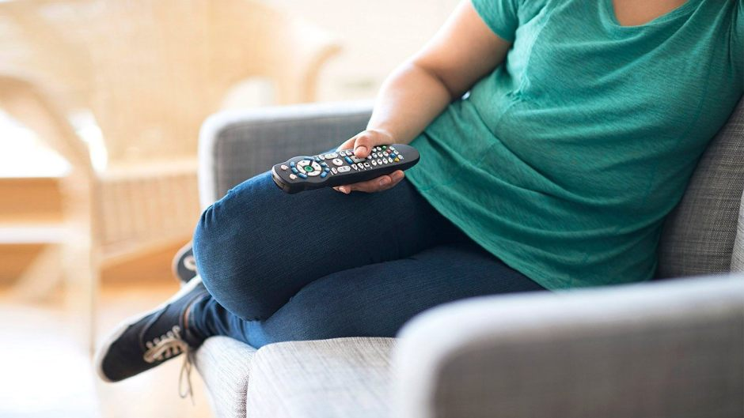

El Sedentarismo en España
Según la European Heart Network, España se sitúa en el top ten de los países europeos con más sedentarismo entre los adultos, dado que el 42% de los mayores de 18 años declara no realizar ningún tipo de actividad física durante la semana, frente al 6% de Suecia o al 7% de Finlandia. Por delante de España figuran Grecia, con el 67% de los adultos sedentarios, Bulgaria con el 58% y Portugal con el 55%.

Son los datos que arroja al proyecto "EuroHeart II: Dieta, Actividad Física y Prevención de la Enfermedad Cardiovascular en Europa" que está llevando a cabo la European Heart Network y en el que colabora la Fundación Española del Corazón (FEC). El proyecto, que finalizará en febrero de 2014, persigue el objetivo de contribuir en la lucha de las enfermedades cardiovasculares (ECV) dando a conocer la situación actual y la perspectiva de futuro de la enfermedad, así como de sus factores de riesgo, facilitando de este modo la elaboración de programas de concienciación social que promuevan especialmente la práctica de ejercicio físico y el seguimiento de la dieta mediterránea. Otro aspecto a destacar en este contexto es la importancia de frenar las cifras de obesidad infantil, en continuo crecimiento en estas últimas décadas.
Según la Fundación Española del Corazón, en nuestro país el 24% de los niños de cinco y seis años sufre sobrepeso, frente al 15% de la media europea.
Datos Estadisticos en España
| Rango de Edad | Encuesta Nacional de Salud 2017 | |||
|---|---|---|---|---|
| Hombre | Mujeres | |||
| Sí | No | Sí | No | |
| Total | 31,9 | 68,1 | 40,0 | 60,0 |
| De 0 a 4 años | 52,9 | 47,1 | 55,0 | 45,0 |
| De 5 a 14 años | 10,8 | 89,2 | 17,4 | 82,6 |
| De 15 a 24 años | 23,2 | 76,8 | 37,2 | 62,8 |
| De 25 a 34 años | 29,3 | 70,7 | 39,9 | 60,1 |
| De 35 a 44 años | 34,9 | 65,1 | 43,2 | 56,8 |
| De 45 a 54 años | 39,1 | 60,9 | 35,2 | 64,8 |
| De 55 a 64 años | 34,4 | 65,6 | 37,2 | 62,9/td> |
| De 65 a 74 años | 28,9 | 71,1 | 38,8 | 61,2 |
| De 75 a 84 años | 38,6 | 61,5 | 58,7 | 41,3 |
| De 85 a más años | 58,7 | 41,3 | 76,2 | 23,8 |
La información especificada anteriormente no está actualizada. Si desea colaborar en la actualización de las estadisticas, puede responder el cuestioanrio que está en la siguiente página: Cuestionario